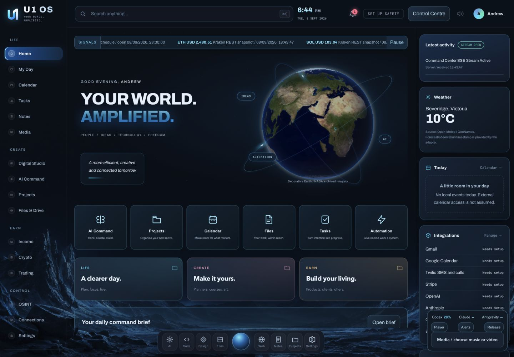
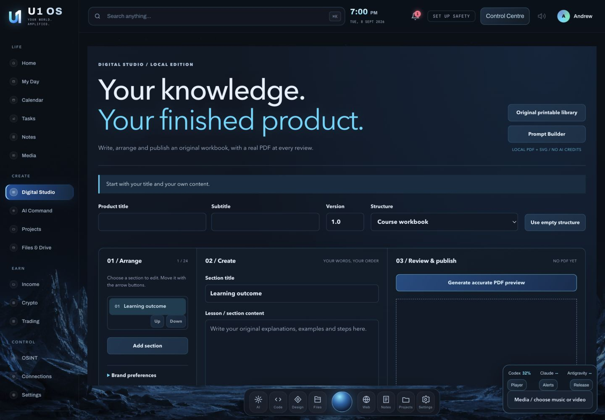
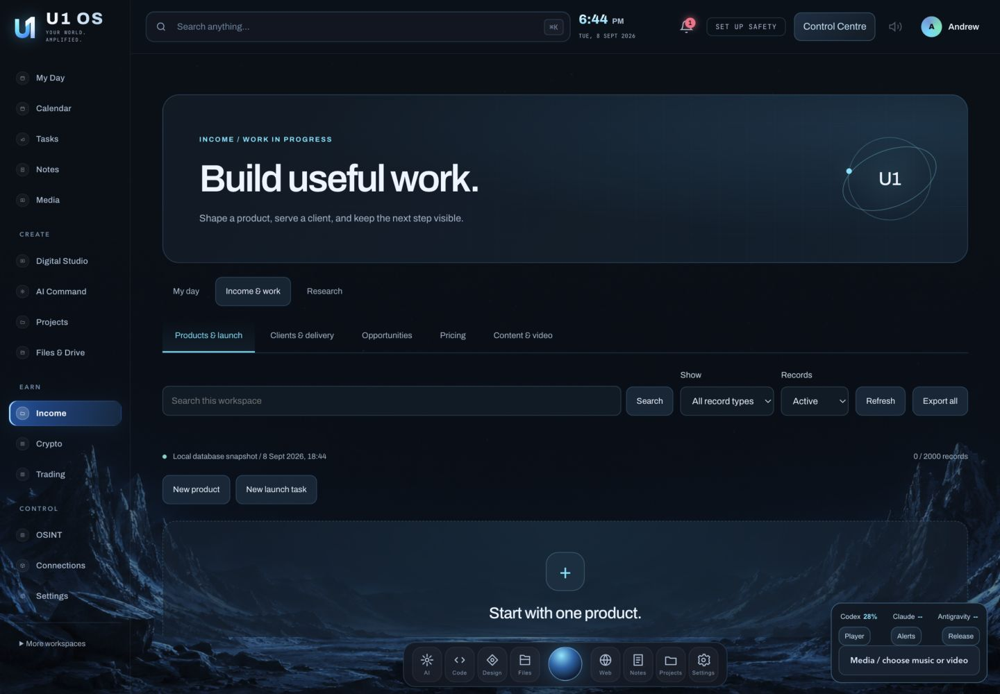
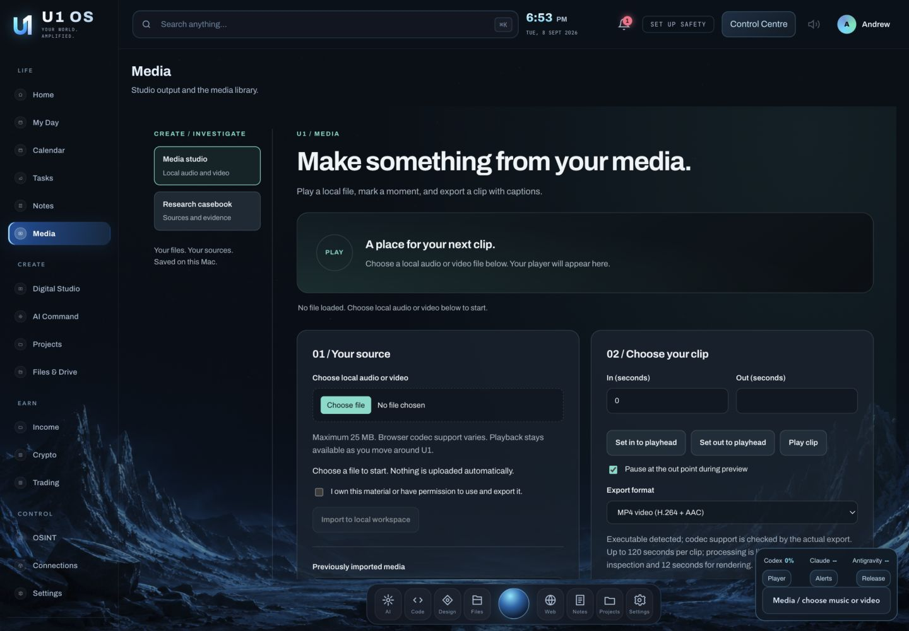

A clearer day.
Bring local tasks, appointments and personal priorities into view. Make room for your wellbeing and the responsibilities outside work, too.
Meet your personal workspaceYOUR PERSONAL WORKSPACE
Your day, your creative work, your business. U1 OS brings the important pieces together in a local-first workspace made for your Mac.
Development build. Real local tools, clear account requirements.
This site is a product overview, not your private OS dashboard.
A little more organised. A lot more possible. Start with the things that matter, then give your ideas somewhere to grow.
Bring local tasks, appointments and personal priorities into view. Make room for your wellbeing and the responsibilities outside work, too.
Meet your personal workspaceTurn your own ideas into planners, course workbooks, original covers and organised product files. Work with actual outputs, not pretend render progress.
Explore Digital StudioShape an offer, plan a launch and keep client work organised. Track actual entries separately from pricing assumptions and market research.
See what is includedA LOOK INSIDE
A cohesive interface with a clearer starting point, focused workspaces and visible source and connection information. These previews are captured from the application, not generated UI mockups.




YOUR WORK. YOUR CONTROL.
Know what is local, what needs an account, and what an action will change. Important decisions should not disappear behind a glowing button.
Local-first, not magically encrypted. Records and drafts can contain private data. Encrypted backup copies have explicit coverage and do not encrypt the live database.
Connections need permission. Installed software and saved settings are not verified account access. AI allowances remain separate, and API billing is not included merely because you have a chat subscription.
Lock, pause and stop are different. The app lock is not a Mac-wide firewall or a guarantee that external orders stop. Cancellation applies only to supported managed jobs.
Publishing stays deliberate. Making a draft does not publish it, make a purchase or execute a trade. Source rights and account permissions still matter.
START SMALL. BUILD FROM THERE.
This is a development application, not a notarised, independently self-contained consumer installer. Provider approval, signing, verification and remaining work are documented separately. The build tracker distinguishes local tools from partial or setup-dependent capabilities.
Read the validation evidence